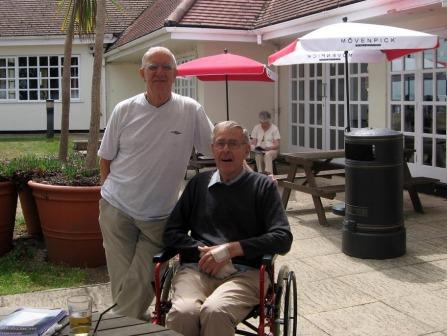

Tributes
|

|

If you would like to have any tributes included here, please contact Philip's daughter, Hilary at enquiries@webtherapy.com.au
Tribute From Frank and Teresa ColeREFLECTIONS ON A LIFELONG FRIENDSHIP. We’ve lived in various parts of the world and of the UK through our jobs etc, but have never lost touch and our lives have been bound together by threads which have sometimes seemed to be uncanny, and had significance in each other’s lives – for example Philomena was our bridesmaid at our wedding and when they married Frank was their Best Man. We had three daughters, they had three daughters; so we shared stories of the trials and tribulations that brought – especially in their teens !!! each of us lost a baby boy at birth........ Each of us was sent to work abroad by our employers (though some might say perhaps that was because they wanted a rest from thorns in their side !) We shared many holidays both in England and in other countries ,when the children were small and when they had flown the nests; we have shared the joy of each other’s Golden Wedding celebrations in recent years, and we will always have wonderful memories of our holiday together on the Isle of Wight only 4 months ago. Of course Philip was the real brainy one, and had a long and distinguished career at IBM, solving problems and designing computer memories long before we even realised the potential of living in a computer world. He seemed to know all about “lateral thinking” He had already decided that Philomena was the girl for him, but she was playing “hard to get” – well she would, wouldn’t she? Over the past seventy plus years we have shared so many laughs, and even when he became ill, he never lost his sense of humour - we can almost hear him laughing now for remembering that story – and the others which no doubt we will share with you during this day of farewell to our dear friend. Philip will be missed by so many people whose lives were touched by this gentle compassionate man , not least those who reaped the benefit of his counselling sessions for so many years. Frank and Teresa Cole - January 2011
Tribute From Hilary GrahamI remember as a very young child having terrible nightmares almost every night about wolves. These wolves were big, black, and had large fangs, dripping with blood. I would often see them looking in through my bedroom window, and one night a pack of them came into my room, were prowling around me, and about to eat me! I called out and you came in. You did not dismiss my childish fears, but instead you rounded up that pack of ferocious beasts, opened the window, and told them sternly to leave. They never bothered me again. I remember accidentally releasing the handbrake on the car while it was parked outside a shop in Germany. I have never seen anyone run as fast as you when you chased the car down the hill, jumped in, and stopped it before it rolled into the busy road. I remember accidentally setting fire to a shirt in our tent while on a holiday abroad (funny how I have all these memories of “accidents” that I caused)! I remember you rushing in and putting out the fire before the tent caught alight. I remember (funnily enough it’s yet again another accident!) spilling a vase of water down the back of a tv while I was babysitting. I phoned you in a panic, and you were round there like a flash to help me out. You took the tv apart, and dried it out with a hairdryer. It worked perfectly after that. I remember asking you to help with my calculus exercises when I was about 18. At the time I found it a bit frustrating that it took so long for you to figure out the answer. Now I realise just how amazing it was that you were able to figure it out at all! A friend of mine was helping his young child with a long division problem, recently, and we were all struggling to remember how to even do that simple exercise! I have a recent memory from just a few weeks ago when I was asked to replace a bulb in an electric Christmas tree for a friend of ours. I couldn’t figure out how to do it at all, but you guided me through every step of the way. I knew that if I brought it home to you, that you would be able to help me, even then. It was a slow process, as by now you were not able to communicate very well, but we just took our time, and between us we got the job done. I remember your sense of humour, your kind nature, and your willingness to help others. I remember, again as a young child, never being able to sleep if you were out for the evening. I used to lie in bed and watch the reflection of each car’s headlights as it passed across the ceiling. I could not rest until your car turned into the driveway. I always felt safe when you were around, and now you are safe with the angels in Heaven. Rest peacefully Dad. Hilary Graham - January 2011
|